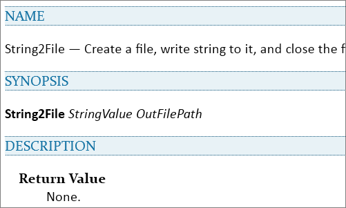

Gen
A Utilities Library For Tcl
Say you are in the middle of solving one problem and find you need to solve another. Suppose you need to write the contents of a string to a file. You could look up how to do this, but it would be nice and convenient if there were something that does it all for you with one command.
Gen is about making it a little bit easier to write Tcl programs. Gen is supposed to be code that you could well write yourself but do not want to have to.